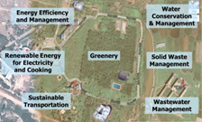
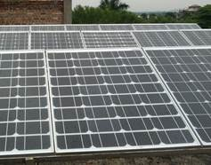
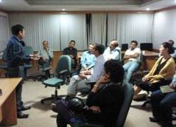

Academic
Research
Government
Developmental
Academic, research, government and developmental institutes tap into our expertise and knowledge-base to gain insights into the clean technology sector, establish green campus, and develop capacity of their management, staff, students, etc.
Green Campus and Living Laboratory
- In Collaboration with NIST (our first Green Campus and Living Laboratory), we design and implement green, sustainable solutions for your campus that encompasses all aspects of campus operations –

- renewable energy,
- energy conservation,
- water and waste management,
- waste-to-energy conversion,
- sustainable transportation,
- greenery on campus
- We design and implement programs to actively involve your management, faculty and staff on environment, climate change, renewable energy, sustainable development and sustainable living.
- We facilitate development of undergraduate/graduate degrees, diplomas and certificate courses focused on renewable energy and delivered through a living laboratory.
Market Research & Analytics
- You will get in-depth market research for your green product and sector-specific research. We also provide comprehensive research on global best practices.
- Your market research is augmented by cost-benefit, economic modeling and financial analysis
We provide feasibility study for new projects, concepts, technologies and emerging sectors in clean energy.
- We also provide policy guidance on renewables, energy efficiency, smart grid, and sustainable development.
Technology Research
- You will get in-depth analysis of state-of-the-art in clean technology developments for your research programs, and a perspective for applications of your research from professionals with experiences on the ground.

- Our areas of expertise include solar energy, bioenergy, energy efficiency, smart grid, and sustainable development.
- We also conduct research and development work in collaboration with our academic partner NIST in Brahampur, Odisha.
Capacity Building

- We facilitate as well as conduct workshops and training on clean technologies for academia,
industry, institutions and government officials.
- We mentor and guide academic, research and developmental
institutions and government bodies on clean technologies R&D and applications.
- Our training and capacity building activities are conducted by practicing professionals,
who bring you real-life experiences to enhance your learning.